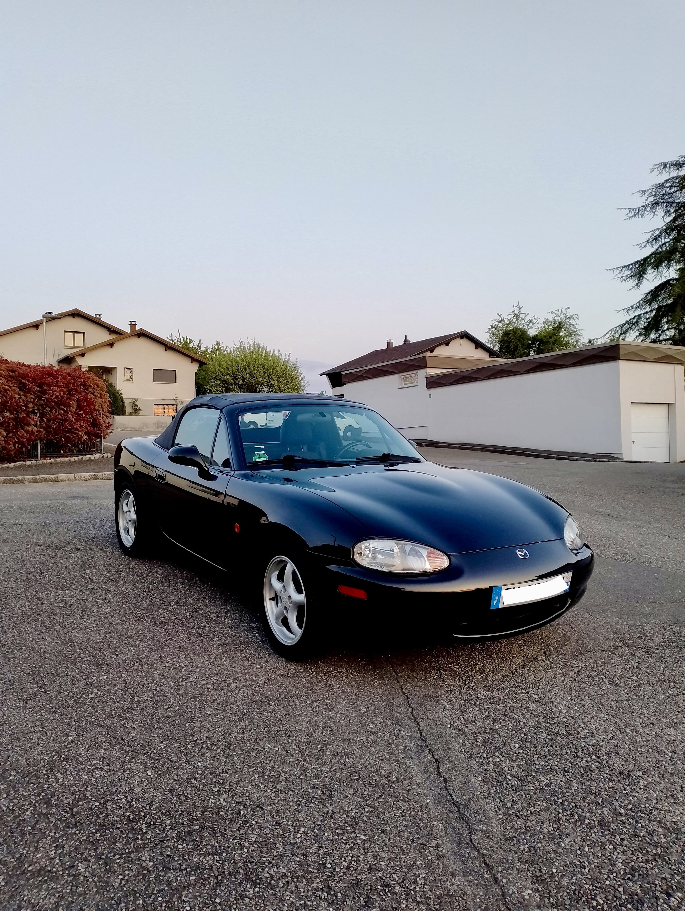
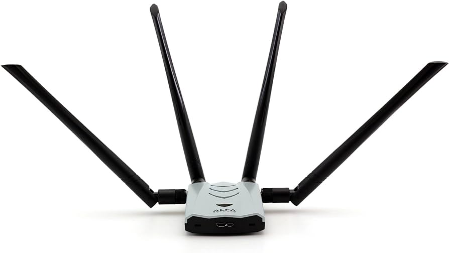
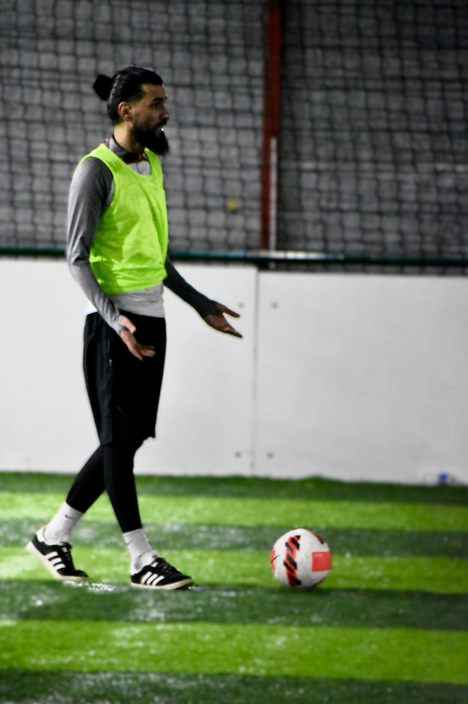

Rénovation Mazda MX-5
Projet complet de restauration : mécanique, intérieur, carrosserie, traitement anti-rouille et remise en état pour revente.
Quelques projets qui montrent ma curiosité technique, ma rigueur et mon goût pour l'apprentissage concret.

Projet complet de restauration : mécanique, intérieur, carrosserie, traitement anti-rouille et remise en état pour revente.

Choix des composants, assemblage, installation, optimisation et maintenance d'une machine adaptée au travail et au gaming.

Exploration d'environnements de test pour comprendre les bases de la cybersécurité, de l'audit et des outils de diagnostic.

Pratique de la prise de vue, gestion du matériel et production de contenus lors d'événements associatifs.